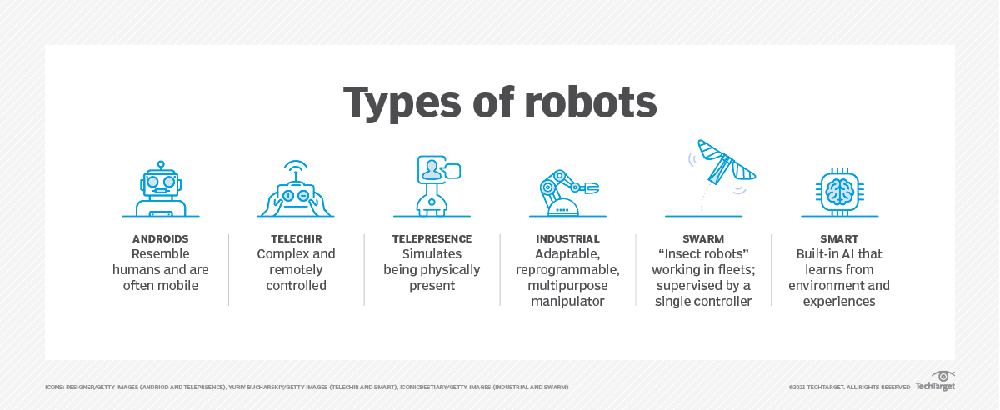

Robotikk er et begrep innen teknologi og innovasjon som refererer til studiet, utviklingen og bruken av roboter.
Robotikk er brukt til design, konstruksjon, drift og bruk av maskiner. Målet med robotikk er å lage roboter for å hjelpe oss mennesker og framtiden til mennesker ved å assistere de med oppgavene dems.
Robotikk utvikler maskiner som kan erstatte mennesker sine jobber eller assistere mennesker og det er mulig at de kan gjøre det dårligere eller bedre. Roboter kan bli brukt til stort sett alt, men det roboter blir brukt til mest idag er de jobbene som er veldig farlige for oss mennesker som bombeutryddelse som å lete etter minner.
Men det blir ikke bare brukt til farlige jobber, det blir også brukt til jobber som og løfte veldig tunge ting, masse ting samtidig eller flytte 1 og 1 ting om gangen. Det blir også brukt til å automatisere mange prosesser som når mat blir lagd eller produkter. Eller så blir det brukt til farlige steder for oss mennesker, vis det er farlige dyr eller for kaldt eller varmt.
Roboter er også raskere enn mennesker jobber sammen fordi roboter kan snakke med hverandre og vet når de skal gjøre det bedre en mennesker.
Robotikk blir brukt over alt idag i mange bransjer og daglige livet. Mange tror at robotikk eller roboter kommer til å ta alle jobbene vi mennesker har, fordi de kan gjøre det bedre, mere presist og trenger ikke å bli betalt.
Fordeler er at all produksjon kommer til å bli raskere og blir gjort trygt og mye mere presist. Ulemper er at mange folk kan miste jobbene sine til roboter som kan gjøre det samme bare man ikke trenger å betale de.

Robotikk har gjort stor forskjell på verdenen vår på mange måter. Robotikk har revolusjonert industrien ved å automatisere produksjon, noe som gjør at det blir økt effektivitet og nøyaktighet.
Robotikk har også gjort framskritt innen medisin, hvor roboter hjelper kirurger i vanskelige operasjoner og gjør inngrep selv. Dette har ledet til bedre behandlingsresultater og tar mindre tid for å bli fysisk aktiv igjen.
Robotikk har også skapet frykt for jobbsikkerhet, når økningen i automatiseringen har ledet til bekymringer for at automatiske maskiner skal ta over mange arbeidsplasser og at folk mister jobbene sine.
Det er også etiske spørsmål man må vurdere når det gjelder hvor langt utviklingen til robotikk burde gå, spesielt innenfor militær og sikkerhet.
På den positive siden kan robotikk også løse store samfunnsproblemer , f.eks. kan de hjelpe til i søk- og redningsoperasjoner i farlige miljøer og i katastrofeområder hvor det kan være vanskelig for mennesker å være eller komme fram til. Det er viktig at vi må balansere de potensielle fordelene og ulempene med robotikk med en nøye og gjennomgått vurdering av de etiske, sosiale og økonomiske konsekvensene.
Robotikk er definitivt en stor del av fremtiden, robotikken utvikler seg stadig og blir mer og mer vanlig i hverdagen våres. Robotikk har gjort en stor del i produksjon og industri, teknologi og medisin bransjene, som gjør at robotikk blir mer vanlig og vil bare bli større.
Eksempler på at roboter er og forblir en stor del av fremtiden:
Robotikk har kommet så langt at vi har mulighet og skapet måter å gjøre hverdagen lettere for folk som mangler kroppsdeler med bioniske kroppsdeler som erstatning.
Robotikk har gjort produksjon mer effektivt og nøyakitg med automatiserte maskiner.
Roboter kan ta hånd om de farligere jobbene som mennesker ikke kan takle.
Roboter er kostbare, men om man tar godt vare på dem kan de spare deg masse penger.